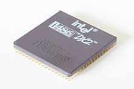

CPU
L'unità di elaborazione centrale (abbreviazione comunemente utilizzata: CPU) o processore centrale è una tipologia di processore digitale general purpose la quale si contraddistingue per sovrintendere tutte le funzionalità del computer digitale basato sull'architettura di von Neumann o sull'architettura Harvard. È detta unità centrale di elaborazione perché coordina in maniera centralizzata tutte le altre unità di elaborazione presenti sulle moderne architetture hardware dei computer ovvero i chip di elaborazione delle varie periferiche interne o schede elettroniche (scheda audio, scheda video, scheda di rete) (es. coprocessore e processore di segnale digitale). Il compito della CPU è quello di eseguire le istruzioni di un programma presente in memoria centrale o primaria (RAM) dopo averlo prelevato dalla memoria secondaria o di massa, dalla ROM, o da altri dispositivi. Durante l'esecuzione del programma la CPU legge o scrive dati in memoria centrale. Il risultato dell'esecuzione dipende dal dato su cui si opera e dallo stato interno in cui la CPU stessa si trova, e può mantenere la traccia delle operazioni passate. Attualmente la CPU è tipicamente implementata come microprocessore monolitico, montata sulla scheda madre e collegata alle altre periferiche interne (schede elettroniche) attraverso il chipset, presente anch'esso sulla scheda madre, e relative interfacce di collegamento.
Struttura della CPU
Una generica CPU contiene:
- Un'unità di controllo (anche nota con la sigla "CU") che legge dalla memoria le istruzioni, se occorre legge anche i dati per l'istruzione letta, esegue l'istruzione e memorizza il risultato se c'è, scrivendolo in memoria o in un registro della CPU.
- Un'unità aritmetica e logica (anche nota con l'acronimo "ALU") che si occupa di eseguire le operazioni logiche e aritmetiche;
- Dei registri, speciali locazioni di memoria interne alla CPU, molto veloci, a cui è possibile accedere molto più rapidamente che alla memoria: il valore complessivo di tutti i registri della CPU costituisce lo stato in cui essa si trova attualmente. Due registri sempre presenti sono:
- Il registro IP (Instruction Pointer) o PC (Program Counter), che contiene l'indirizzo in memoria della prossima istruzione da eseguire;
- Il registro dei flag: questo registro non contiene valori numerici convenzionali, ma è piuttosto un insieme di bit, detti appunto flag, che segnalano stati particolari della CPU e alcune informazioni sul risultato dell'ultima operazione eseguita. I flag più importanti sono:
- Flag di stato:
- Overflow: indica se il risultato dell'operazione precedente era troppo grande per il campo risultato: 0 assenza di overflow, 1 overflow
- Zero: vale 1 se l'ultima operazione ha avuto risultato zero, altrimenti vale 0.
- Carry: vale 1 se l'ultima operazione ha ecceduto la capacità del registro che contiene il risultato, altrimenti vale 0 (esempio: in un registro a 8 bit, che può rappresentare solo numeri da 0 a 255, la somma 178+250 darebbe come risultato 172, cioè 428 - 256, e il carry verrebbe posto a 1 insieme al flag di overflow).
- Segno: indica il segno del risultato dell'operazione precedente: 0 risultato positivo, 1 risultato negativo
- Flag di controllo:
- Interrupt: se a questo flag viene assegnato valore 1, la CPU smette di rispondere alle richieste di servizio esterne delle periferiche (i segnali delle linee IRQ) finché non viene ripristinato al valore 0, o finché non arriva dall'esterno un segnale di RESET.
Una generica CPU deve eseguire i suoi compiti sincronizzandoli con il resto del sistema: perciò è dotata, oltre a quanto sopra elencato, anche di uno o più bus interni che si occupano di collegare registri, ALU, unità di controllo e memoria: inoltre all'unità di controllo interna della CPU fanno capo una serie di segnali elettrici esterni che si occupano di tenere la CPU al corrente dello stato del resto del sistema e di agire su di esso. Il tipo e il numero di segnali esterni gestiti possono variare ma alcuni, come il RESET, le linee di IRQ e il CLOCK sono sempre presenti.
Per quanto riguarda i registri, le CPU possono gestirli in molti modi: i più comuni sono registri nominativi (CPU CISC classiche), file di registri (RISC) e stack di registri (Transputer e simili).
- Stack di registri: i registri sono organizzati in una struttura a stack (pila); questa architettura ha il vantaggio di non dover specificare su quale registro interno operare (è sempre quello in cima allo stack) ottenendo istruzioni più corte e più semplici da decodificare. Il rovescio della medaglia è che nel caso sia necessario un dato "sepolto" in fondo allo stack, il suo recupero è un'operazione molto lenta.
- Registri nominativi: ogni registro è identificato singolarmente e le istruzioni che usano registri specificano di volta in volta quale registro devono usare. Spesso alcuni registri sono dedicati a scopi particolari (registri indice, accumulatori, registri di segmento ecc.) imponendo la non ortogonalità del set di istruzioni (vedi oltre). La gran maggioranza delle CPU generiche degli anni '70 e '80 è di questo tipo.
- File di registri: I registri sono organizzati come una memoria interna della CPU e indicizzati: la CPU "alloca" un certo numero di registri per ogni processo e/o subroutine in esecuzione, eliminando la necessità di accedere alla RAM per salvare gli stack di chiamata delle funzioni e i dati di task switching nei sistemi multitask.
Una moderna CPU (vista del lato dove sono posizionati i pin)
Una CPU è un circuito digitale sincrono: vale a dire che il suo stato cambia ogni volta che riceve un impulso da un segnale di sincronismo detto clock, che ne determina di conseguenza la velocità operativa, detta velocità di clock: quindi il tempo di esecuzione di una istruzione si misura in cicli di clock, cioè in quanti impulsi di clock sono necessari perché la CPU la completi. In effetti, una parte importante e delicata di ogni CPU è il sistema di distribuzione che porta il segnale di clock alle varie unità e sottounità di cui è composta, per fare in modo che siano sempre in sincronia: tale sistema si dirama in una struttura ad albero con divisori e ripetitori che giunge ovunque nella CPU.
Nei processori più moderni (Pentium, Athlon, PowerPC) questa "catena di ingranaggi" elettronica arriva ad impiegare circa il 30% di tutti i transistor disponibili. La velocità di questa distribuzione determina in maniera diretta la massima frequenza operativa di una CPU: nessuna CPU può essere più veloce del suo critical path, cioè del tempo che impiega il clock per percorrere il tratto più lungo in tutto l'albero di distribuzione del clock. Per esempio, se il segnale di clock di una data CPU impiega un nanosecondo per attraversare tutto il chip ed arrivare fino all'ultima sottounità, questa CPU potrà operare a non più di 1 GHz, perché altrimenti le sue componenti interne perderebbero la sincronizzazione, con risultati imprevedibili (per avere un margine di sicurezza, il limite pratico sarà anzi ben minore di 1 GHz).
Tipicamente la CPU è l'Interprete del linguaggio macchina. Come tutti gli interpreti, si basa sul seguente ciclo:
- Acquisizione dell'istruzione (Instruction Fetch): il processore preleva l'istruzione dalla memoria, presente nell'indirizzo (tipicamente logico) specificato da un registro "speciale" ("speciale" opposto di "generico"), il PC
- Decodifica (Operand Assembly): una volta che la word è stata prelevata, viene determinata quale operazione debba essere eseguita e come ottenere gli operandi, in base ad una funzione il cui dominio è costituito dai codici operativi (tipicamente i bit alti delle word) ed il codominio consiste nei brani di microprogramma da eseguire
- Esecuzione (Execute): viene eseguita la computazione desiderata. Nell'ultimo passo dell'esecuzione viene incrementato il PC: tipicamente di uno se l'istruzione non era un salto condizionale, altrimenti l'incremento dipende dall'istruzione e dall'esito di questa
Questo ciclo elementare può essere migliorato in vari modi: per esempio, la decodifica di una istruzione può essere fatta contemporaneamente all'esecuzione della precedente e alla lettura dalla memoria della prossima (instruction prefetch) e lo stesso può essere fatto con i dati che si prevede saranno necessari alle istruzioni (data prefetch). La stessa esecuzione delle istruzioni può essere suddivisa in passi più semplici, da eseguire in stadi successivi, organizzando la unità di controllo e la ALU in stadi consecutivi, come delle catene di montaggio (pipeline''): in questo modo più istruzioni possono essere eseguite "quasi contemporaneamente", ciascuna occupando ad un certo istante uno stadio diverso della pipeline.